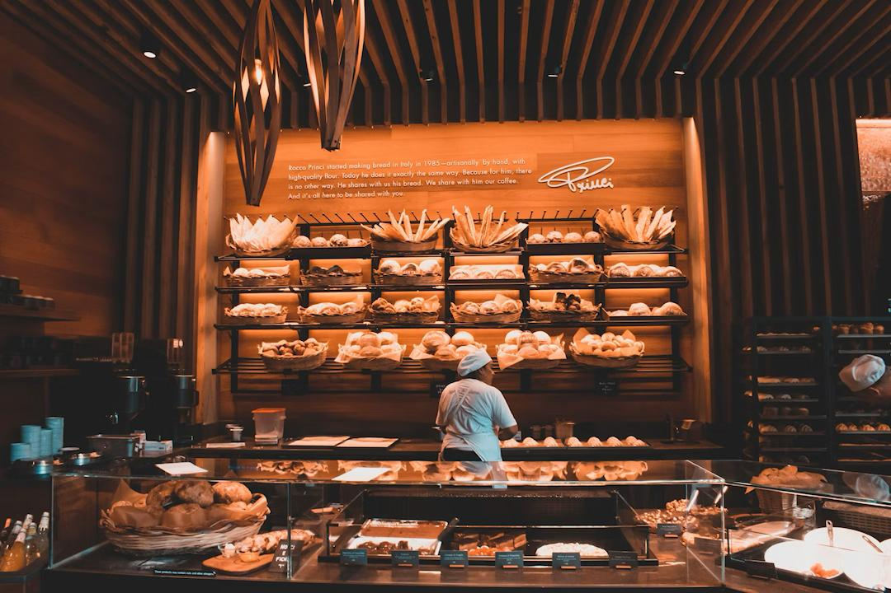

Est. 2019, Cape Town
Baked with Heart,
Shared with Love
Maddison Bakery is a family-run artisanal bakery that started as a humble pop-up stall at local markets and has grown into a beloved neighbourhood café right here in Cape Town.
Our mission is simple: to create delicious homemade baked goods while building a warm community space where everyone feels welcome — whether you're grabbing a morning pastry on the go or settling in for a slow coffee.
Everything you taste here is made from scratch, every single morning, using quality locally sourced ingredients. We believe that the best baking is done with patience, quality ingredients, and a whole lot of love.
🌾 Local First
We partner with Cape Town suppliers to bring you the freshest ingredients.
🤝 Community
A space where neighbours connect and friendships form over great food.
✨ Quality
No shortcuts — every recipe is tested, refined, and baked with pride.
🎂 Custom Love
We say yes to custom orders and make your special moments sweeter.
Come Visit Us
Find us at Shop 12, V&A Waterfront, Cape Town. We're open Monday to Saturday, 7am – 5pm. Stop by for a fresh bake and a smile — you're always welcome here.
Get Directions